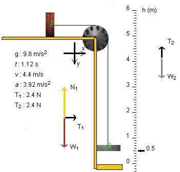

Yes, the tension in the string is equal to 2.35 N. The snapshot above shows the system at an instant when it is in motion.
Solution
Plan It. Apply Newton's second law to the two blocks separately. This will give two equations for two unknowns: the tension T and the magnitude a of the acceleration of the blocks. (Both blocks will have accelerations of the same magnitude because the string is assumed to not stretch.) Note that the magnitudes T1 and T2 of the forces exerted by the string on blocks 1 and 2, respectively, are equal to the tension T: T = T1 = T2. The two equations for T and a can be solved.
Setup
block 1 (x-direction): T = m1a (1)
block 2 (y-direction): m2g - T = m2a. (2)
Solution. We are interested in T and must eliminate a from (1) and (2). Multiplying both sides of (1) by m2 and multiplying both sides of (2) by m1 gives
m2T =
m1m2a (3)
and
m1m2g - m1T =
m1m2a. (4)
Subtracting (4) from (3) gives
m2 T - (m1 m2g -
m1T) = 0 (5)
whence
m1T +
m2 T = m1
m2g (6)
whence
T = [m1 m2 /(
m1+ m2)] g
. (7)
Substituting the given mass values gives for the tension T in the string and the magnitudes of the forces exerted by the string on the two blocks:
T = T1 = T2 = [0.6x0.4/(0.6+0.4)] x 9.8 = 0.24 x 9.8 = 2.35 N . (8)
If one has already found the magnitude of the acceleration, 3.92 m/s2, it is very easy to get the tension by substituting into equation (1). Thus,
T = m1a = 0.6 x 3.92 = 2.35 N. (9)
Think About It.
T = m1 /( m1+ m2) m2g. (10)
Thus, T < m2g since m1 /( m1+ m2) < 1.